¿El modelo se mueve como el sargazo real?
Validación de PMS v0.4.0 (pms-browniano-0.3.0) contra el sargazo visto por satélite (AFAI de USF, NOAA AOML), 2022–2026. Generado el 2026-11-01 01:13 UTC por scripts/validar.py.
Con datos satelitales 2022–2026, el modelo v0.3 (solo oleaje) no se distingue de suponer que el sargazo no se mueve; ni agregando corrientes (E4 Corriente SMOC total + browniano) se supera a la persistencia.
FSS a 25 km en 11 casos de evaluación
1 = coincidencia perfecta; 0 = ninguna. IC 95 % por bootstrap de casos. Δ vs E0 = diferencia pareada contra suponer que el sargazo no se mueve. γ y K_h de E3 se eligieron con 14 casos de calibración anteriores a 2025.
| Experimento | +3 días | +5 días | +7 días |
|---|---|---|---|
| E0 Persistencia | 0.375 IC 0.291–0.452 | 0.354 IC 0.272–0.424 | 0.364 IC 0.308–0.411 |
| E1 Solo browniano | 0.379 IC 0.294–0.455 Δ vs E0 +0.004 [-0.001, +0.010] | 0.357 IC 0.275–0.429 Δ vs E0 +0.003 [-0.004, +0.012] | 0.371 IC 0.313–0.420 Δ vs E0 +0.007 [+0.001, +0.014] |
| E2 PMS v0.3 | 0.377 IC 0.296–0.449 Δ vs E0 +0.002 [-0.017, +0.024] | 0.332 IC 0.254–0.404 Δ vs E0 -0.022 [-0.045, +0.001] | 0.345 IC 0.280–0.410 Δ vs E0 -0.019 [-0.055, +0.018] |
| E3 PMS calibrado | 0.378 IC 0.293–0.454 Δ vs E0 +0.003 [-0.004, +0.009] | 0.352 IC 0.270–0.423 Δ vs E0 -0.002 [-0.009, +0.006] | 0.363 IC 0.307–0.409 Δ vs E0 -0.001 [-0.006, +0.005] |
| E4 Corriente SMOC total + browniano | 0.359 IC 0.270–0.437 Δ vs E0 -0.016 [-0.077, +0.049] | 0.283 IC 0.215–0.346 Δ vs E0 -0.071 [-0.134, -0.006] | 0.254 IC 0.190–0.315 Δ vs E0 -0.110 [-0.165, -0.049] |
| E5 Corriente sin Stokes + viento 1 % + ola | 0.342 IC 0.261–0.416 Δ vs E0 -0.033 [-0.091, +0.025] | 0.269 IC 0.200–0.333 Δ vs E0 -0.085 [-0.144, -0.020] | 0.226 IC 0.162–0.289 Δ vs E0 -0.138 [-0.187, -0.084] |
| E5 Corriente sin Stokes + viento 2 % + ola | 0.297 IC 0.227–0.366 Δ vs E0 -0.078 [-0.125, -0.034] | 0.255 IC 0.186–0.317 Δ vs E0 -0.099 [-0.152, -0.041] | 0.199 IC 0.137–0.259 Δ vs E0 -0.165 [-0.209, -0.122] |
| E5 Corriente sin Stokes + viento 3 % + ola | 0.282 IC 0.213–0.351 Δ vs E0 -0.093 [-0.145, -0.045] | 0.227 IC 0.169–0.280 Δ vs E0 -0.126 [-0.173, -0.077] | 0.182 IC 0.122–0.244 Δ vs E0 -0.182 [-0.228, -0.136] |
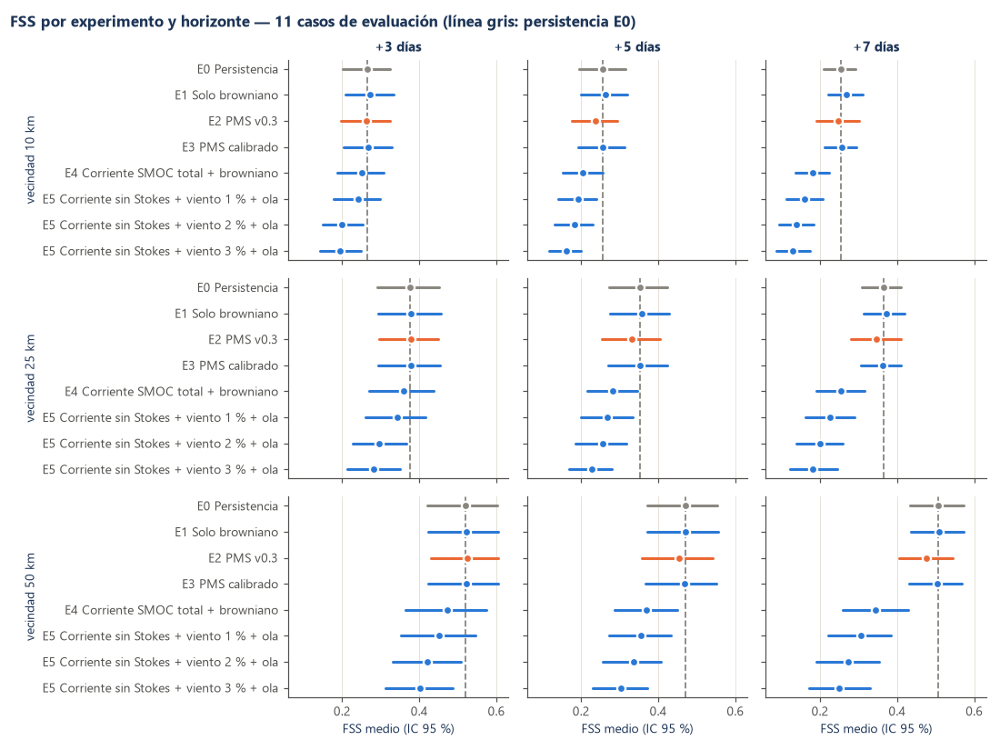
Desplazamiento observado (MCC) contra el modelo
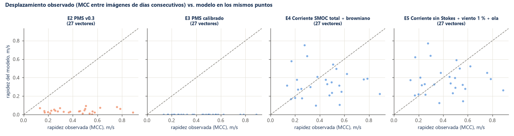
Casos de evaluación: observado contra simulado
Naranja: sargazo observado; azul: simulado; gris claro: nube.
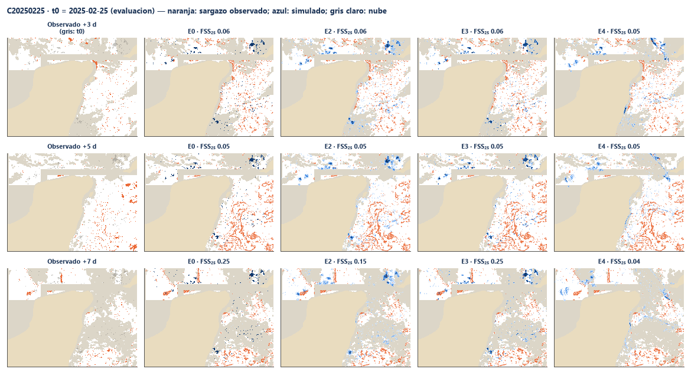
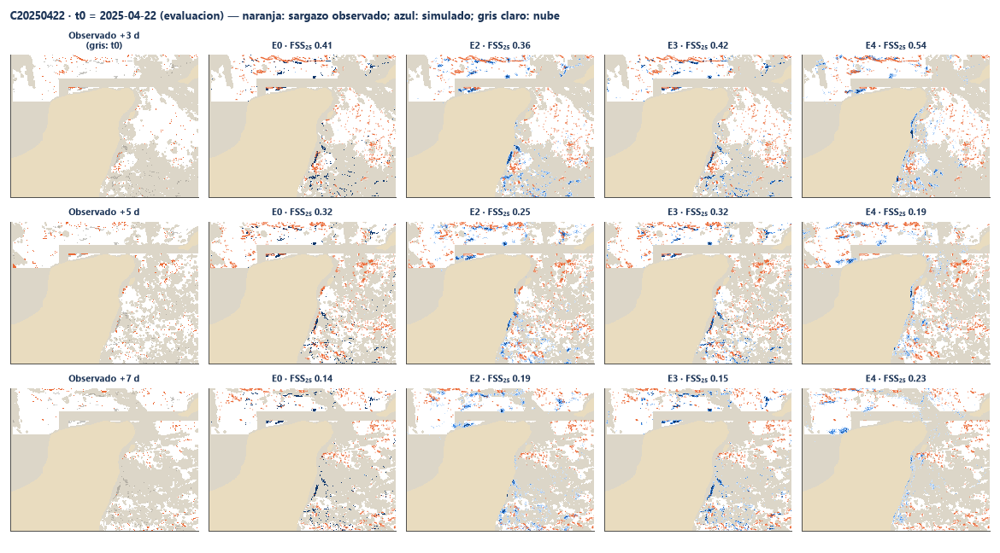
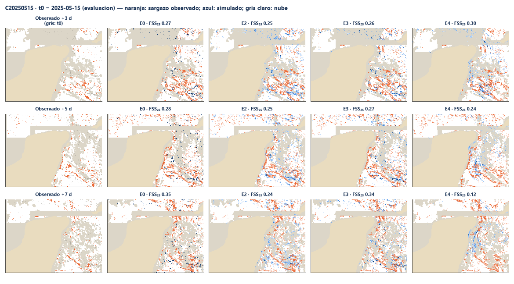
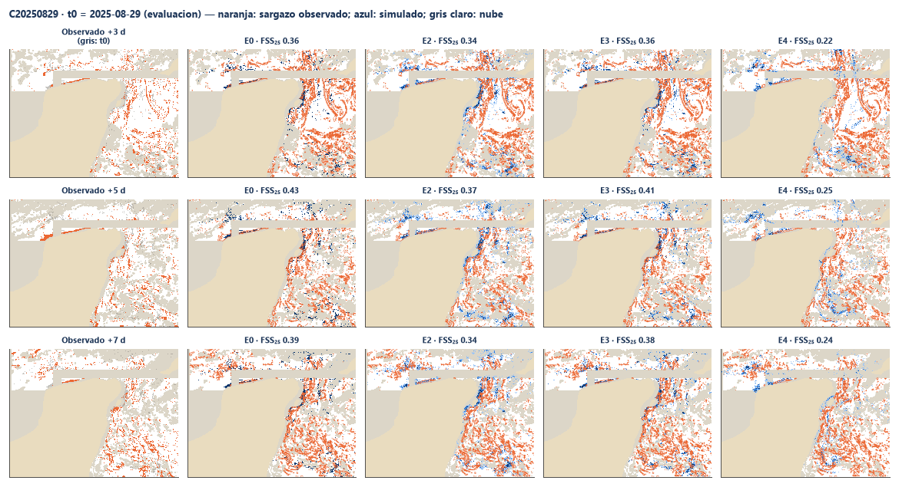
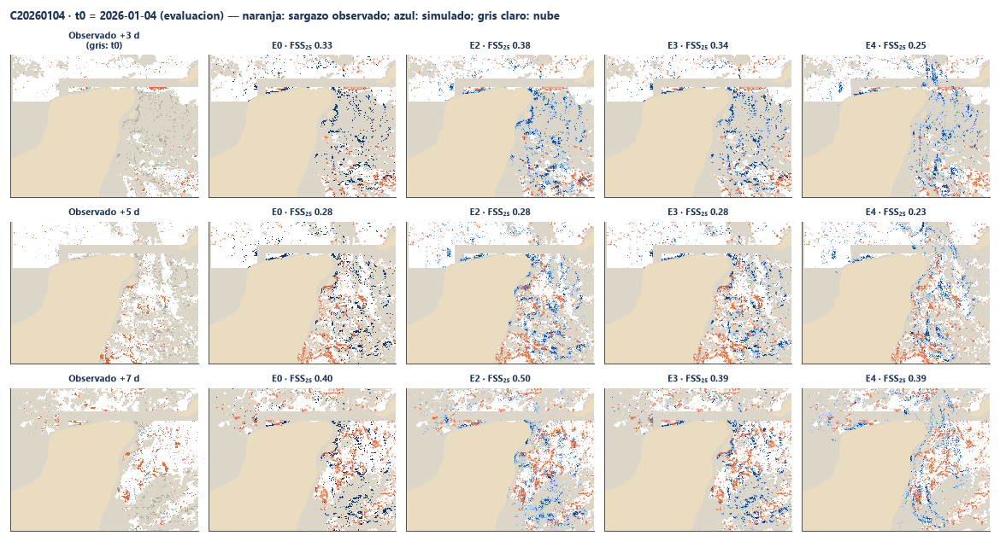
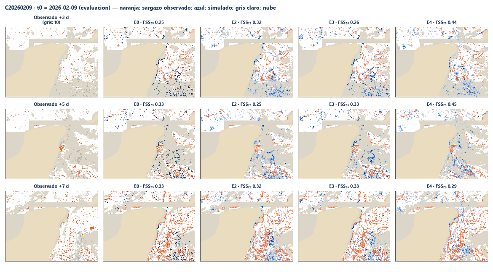
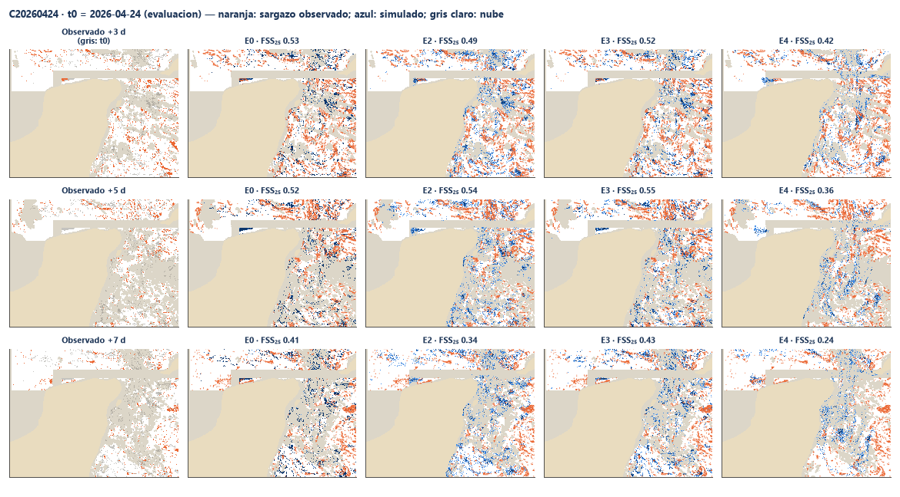
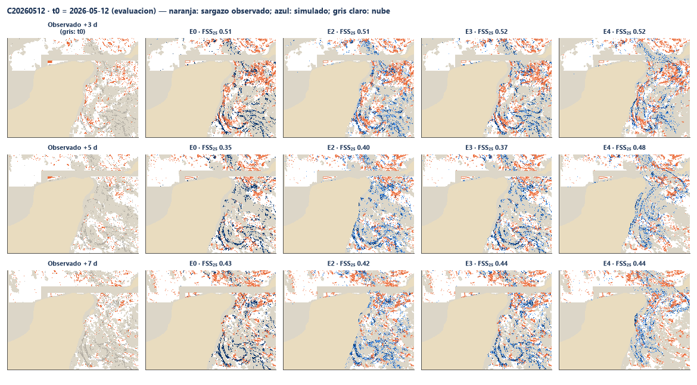
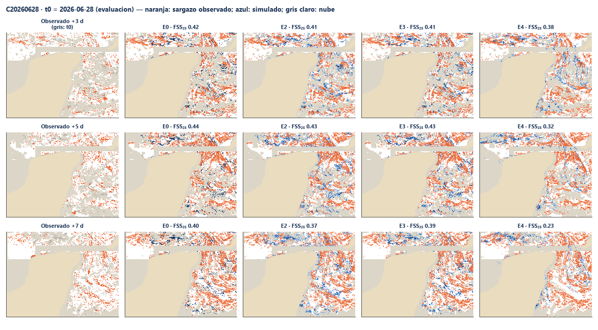
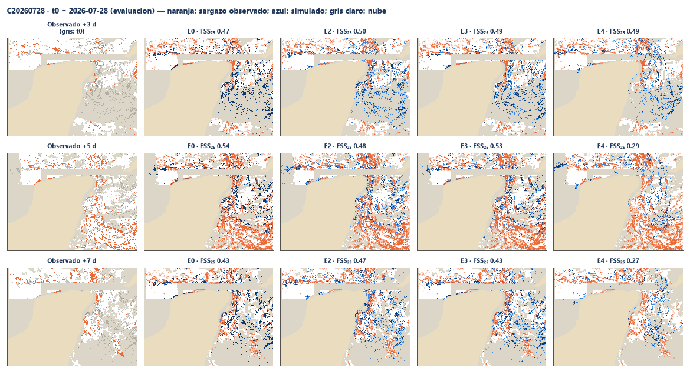
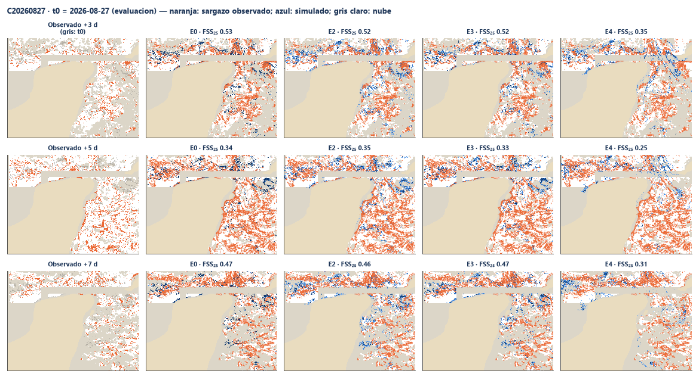
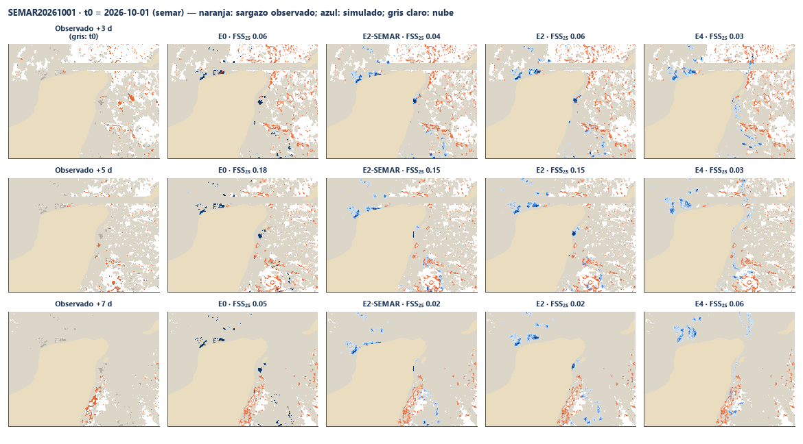
Cómo se hizo
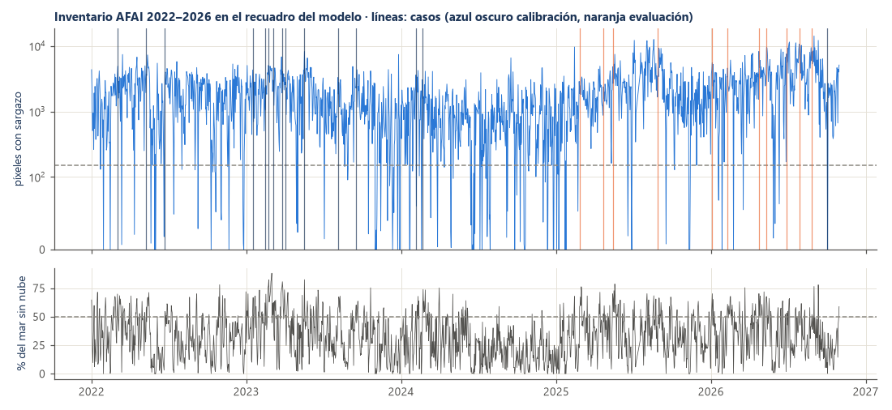
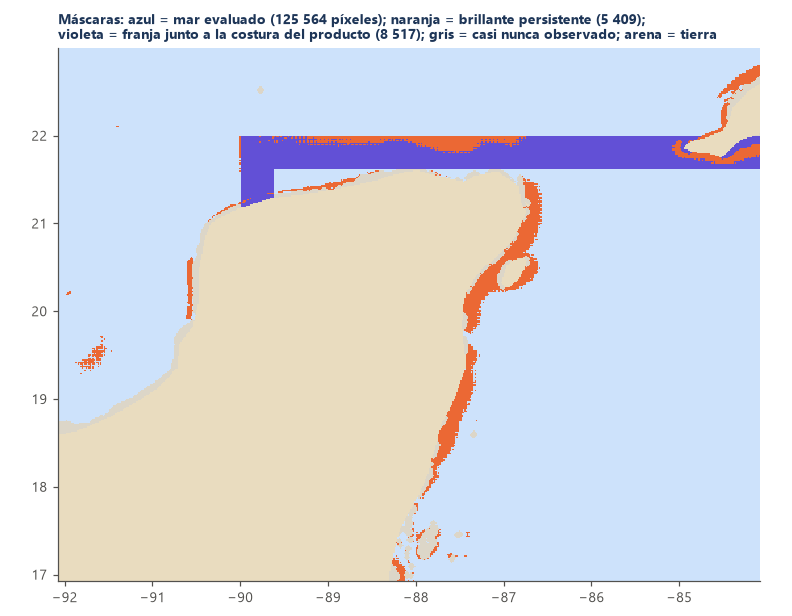
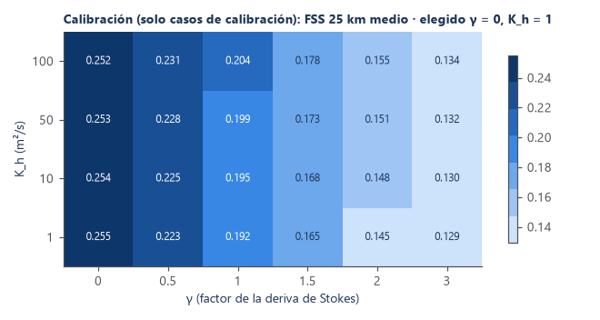